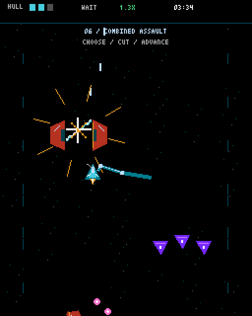
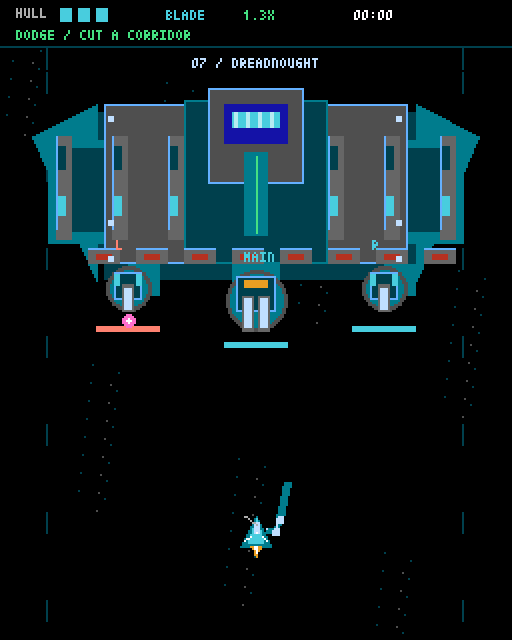

弾を読む。
予告を見て、射線から外れる。
敵を倒しても、放たれた弾は残る。
NEAR-RANGE / BLADE SHOOTING
迫る弾を読み、刃で道を開く。
一瞬の隙に飛び込む、近接ブレイドSTG。
PC・スマホ対応 ／ インストール不要

05:00ボスまでの道中
3 PARTS選べる撃破順
ONE BLADE避ける、その先へ
PLAYABLE PROTOTYPE v0.7.001 / THE CORE
ショットは自動。大切なのは、
自分で選ぶ立ち位置と、斬り込む一瞬。
予告を見て、射線から外れる。
敵を倒しても、放たれた弾は残る。
刃が通ったところだけ、弾を消す。
自分の手で、突破口を作ろう。
敵の射撃が止まったら、距離を詰める。
近づいたぶんだけ、一振りが効く。
斬撃中も被弾する。刃の届かない弾は、移動で避けよう。
02 / STAGE 01
編隊、バックアタック、突進、装甲、弾幕。
積み重なる脅威の中で、狙う相手を選べ。

FINAL ENCOUNTER
3つの部位を、好きな順で狙える。
砲台を壊せば、その攻撃が止まる。
残る弾を抜けて、次の部位へ。
狙い目は OPEN。射撃が緩む時間に踏み込もう。
03 / PLAY NOW
起動後、ゲーム画面をタップして
「開始」を押してください。
インストール不要です。このページからブラウザで遊べます。ゲーム専用画面を使うと、画面を広く取れます。スマホ実機での操作感は開発中です。
読み込み後にゲーム画面をタップし、「開始」を押してください。通信状況によって初回の読み込みに時間がかかります。うまく動かない場合は、ゲーム専用画面を開き直してください。
5分の道中と、3部位を持つ巨大戦艦までの1面です。開発中のプロトタイプのため、ゲーム内容やバランスは今後変わることがあります。